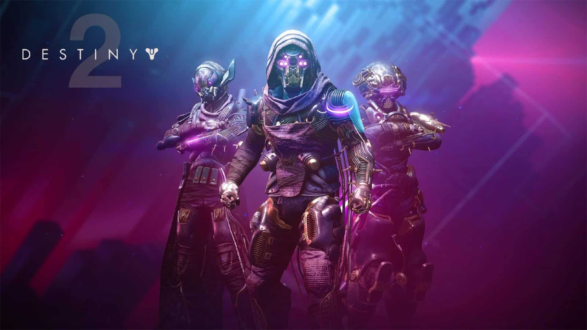

A Destiny 2 egy online többjátékos first-person shooter (FPS) videojáték, amelyet a Bungie fejlesztett és adott ki. A játék 2017. szeptember 6-án jelent meg PlayStation 4 és Xbox One platformokon, majd október 24-én PC-re is elérhetővé vált. A Destiny 2 a Bungie által 2014-ben kiadott Destiny folytatása, és azóta számos kiegészítést és frissítést kapott, amelyek tovább bővítették a játék világát és játékmenetét.
A Destiny 2 története egy sci-fi világban játszódik, ahol a játékosok Őrzők (Guardians), akiknek feladata, hogy megvédjék az utolsó biztonságos várost a Földön és a benne élő emberiséget a külső fenyegetésektől. Az Őrzők a Fény erejét használják, amelyet a Titán, Vadász és Varázsló kasztok különböző képességeikben nyilvánulnak meg.
A Destiny 2 alaptörténete Ghaul, a Vörös Légió vezérének inváziójával kezdődik, aki megtámadja a Várost, és elveszi az Őrzők Fényét, amely az erejük forrása. A játékosok feladata, hogy visszaszerezzék a Fényüket, és legyőzzék Ghaul-t és a Vörös Légiót, hogy visszaállítsák a békét és biztonságot.
A Destiny 2 az alapjátékon túl számos bővítést és kiegészítőt kapott, amelyek új történeti szálakat, helyszíneket, tevékenységeket és fegyvereket hoztak a játékba. Ezek közé tartoznak a következők:
A Destiny 2 játékmenete a lövöldözős akciót, a szerepjáték elemeket és az MMO (massively multiplayer online) funkciókat ötvözi. A játékosok különböző tevékenységekben vehetnek részt, amelyek különböző kihívásokat és jutalmakat kínálnak.
A játékosok három fő kaszt közül választhatnak:
Minden kaszt különböző alsztályokkal rendelkezik, amelyek különféle képességeket és szuperképességeket kínálnak.
A Destiny 2-ben a játékosok számos fegyvert és felszerelést gyűjthetnek, amelyek különböző ritkaságúak és tulajdonságokkal rendelkeznek. A fegyverek három fő kategóriába sorolhatók:
A felszerelések és fegyverek különféle perkekkel és tulajdonságokkal rendelkeznek, amelyeket a játékosok testre szabhatnak, hogy a saját játékstílusukhoz igazítsák.
A Destiny 2 változatos PvE (player vs environment) és PvP (player vs player) tevékenységeket kínál:
A Destiny 2-ben a játékosok folyamatosan fejleszthetik karakterüket, növelve a szintjüket és felszerelésük teljesítményét. Az erősebb felszerelés megszerzésével a játékosok új kihívásoknak és tevékenységeknek vághatnak neki. Az endgame tartalmak, mint például a Raidek és a magas szintű Nightfall Strikes, komoly kihívást jelentenek, és nagy jutalmakat kínálnak.
A Destiny 2 erős közösségi élményeket kínál. A játékosok klánokba csatlakozhatnak, ahol közösen vehetnek részt csatákban és tevékenységekben. A klánok különféle jutalmakat szerezhetnek, és a klántagok együttműködhetnek a közös célok elérésében. A játék támogatja a hangalapú és szöveges csevegést, valamint számos közösségi funkciót, mint például a barátlisták és a közös tevékenységek szervezése.
A Destiny 2 rendszeres szezonális eseményekkel és frissítésekkel tartja fenn a játékosok érdeklődését. Ezek az események gyakran új tartalmakat, küldetéseket, fegyvereket és felszereléseket hoznak a játékba. A fejlesztők folyamatosan figyelik a közösségi visszajelzéseket, és ennek megfelelően módosítják a játék egyensúlyát és teljesítményét.
A Destiny 2 alapvetően ingyenesen játszható, de tartalmaz mikrotranzakciós rendszert, ahol a játékosok valódi pénzért vásárolhatnak kozmetikai elemeket, mint például páncél- és fegyverkinézeteket, járműveket és egyéb testreszabási lehet
